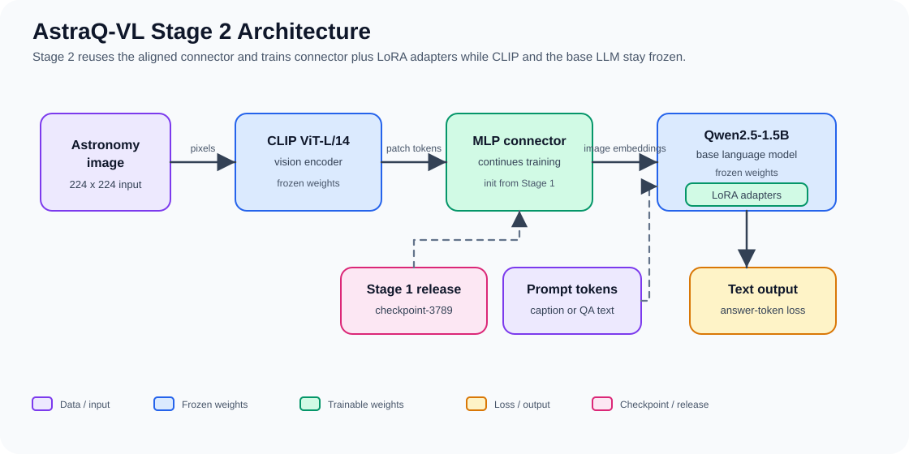
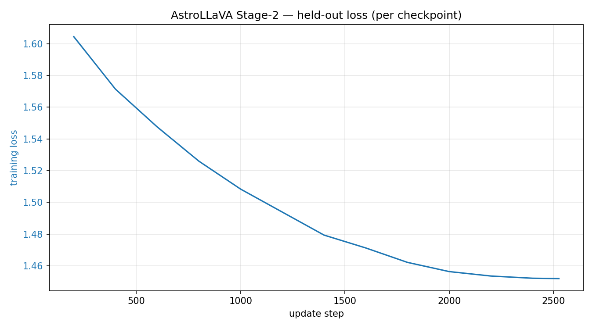

RESEARCH PROJECT · 2026
Teaching a small language model to work with astronomy images
I built AstraQ VL around frozen CLIP and Qwen components. A connector first learns the visual language alignment. LoRA training then adapts the language model for astronomy captions and questions.
- Trainable
- 22.4M parameters
- Share trained
- 1.20 percent
- Training data
- 161,653 records
- Held out
- 3,271 records
THE QUESTION
How far can staged adaptation go?
Astronomy visual question answering needs both image grounding and domain language. I wanted to study a setup where most of the base model remains fixed, so the experiment could focus on the alignment connector and a small set of language model adapters.
The project uses 29,151 training images and a disjoint set of 591 unseen images. Those held out images provide 3,271 caption and question records for evaluation.
METHOD
Two stages with different jobs
- 01
Connector alignment
Stage 1 freezes CLIP ViT L/14 and Qwen2.5 1.5B Instruct. A two layer MLP learns to map CLIP patch features into the language model embedding space.
- 02
Instruction tuning
Stage 2 starts from the trained connector and keeps it trainable. LoRA adapters are added across the Qwen projection layers while the base language model and vision tower remain frozen.
- 03
Held out generation
The final checkpoint is evaluated on every caption and question record from the unseen image split. Predictions and per sample metrics are included with the released artifacts.

HELD OUT RESULTS
Stage 1 and Stage 2
All 3,271 held out records
| Measure | Stage 1 | Stage 2 | Direction |
|---|---|---|---|
| ROUGE L | 0.3116 | 0.3404 | Higher |
| Token F1 | 0.3672 | 0.3948 | Higher |
| Exact match | 0.0272 | 0.0339 | Higher |
| Unsupported specifics per record | 0.3733 | 0.3369 | Lower |
| Specificity precision | 0.1941 | 0.2353 | Higher |

READING THE RESULTS
The comparison is useful, but not complete
Stage 2 improves several in domain measures
Compared with Stage 1 on the same split, Stage 2 has better reference alignment and fewer unsupported specifics. These are held out generation results, not a broad astronomy benchmark.
The Qwen2.5 VL 7B comparison has a much lower contradiction rate under the NLI proxy: 0.1764 compared with 0.5436 for AstraQ VL Stage 2. That result matters, so the page does not present AstraQ VL as generally better than the larger baseline.
CLIP processes images at 224 by 224 pixels, which limits fine astronomical detail. The base language model has 1.5 billion parameters, and LoRA adaptation has less capacity than full model tuning.
RESOURCES
Code, weights, and evaluation files
The released checkpoint contains the connector and LoRA adapter. It also requires the repository code and the two base models.